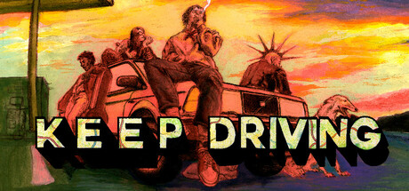
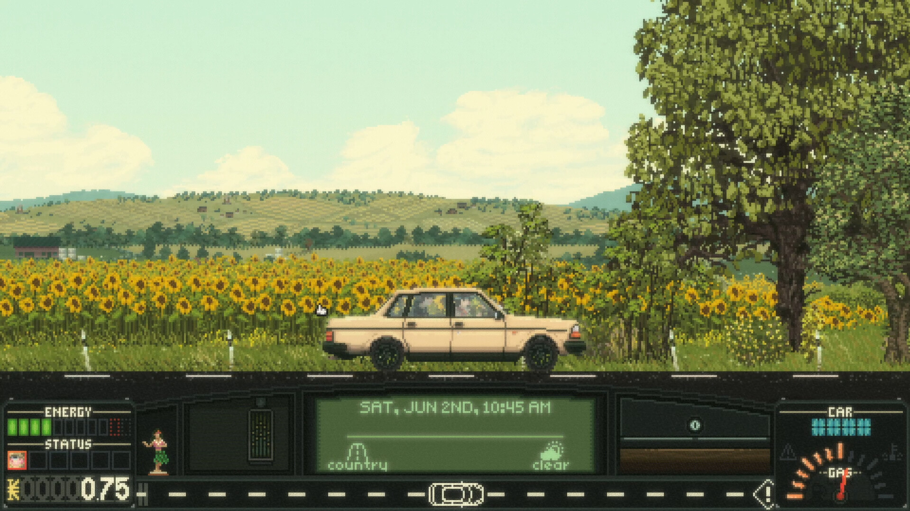

Keep Driving 登陆 PS5 / Xbox Series / Switch；PC 同日开 Steam Workshop
- 火苗
- 🔥🔥（2）
- 轴
- indie
- 日期
- 2026-09-28
瑞典独立工作室 Y/CJ/Y（Post Void）公路管理 RPG《Keep Driving》于 2026-09-28 正式登陆 PlayStation 5、Xbox Series X|S 与 Nintendo Switch；主机版打包既有 PC 内容更新（新结局/路况事件/本地…
今日主线是行业独立轴 Keep Driving 主机三端发售（PS5 / Xbox Series / Switch；PC 同日 Workshop）。今日无新旗舰；今日无新 MCP/Skill 推荐。AI / 二次元 / 游戏开发均为空库未出 Tab。显示 1 库。
判定：最高 Attention 落在 Keep Driving 主机发售（fire2）。今日无新旗舰、无新 MCP/Skill 推荐。显示 1 库（仅游戏行业）。不复述昨 Minecraft LIVE / Cold Iron。不发涉政。新游戏事件×1，可通知头条选题。
最高 Attention 落在行业 Keep Driving 主机三端发售（🔥🔥）。今日无新旗舰；今日无新 MCP/Skill 推荐。显示 1 库。AI / 二次元 / 游戏开发空库未出 Tab。
待核：星铁 4.6 开服实况；Dungeons II / 空战奇兵8 抢先 / 巫师3 Remastered 9/29；狂三 9/29；鸣潮 3.7；筛界/Ice Caves 精确窗；Qwen4 / Sonnet·Haiku 5.5 / Grok 4.8 / V4.1-Pro。
Keep Driving 登陆 PS5 / Xbox Series / Switch；PC 同日开 Steam Workshop
瑞典独立工作室 Y/CJ/Y（Post Void）公路管理 RPG《Keep Driving》于 2026-09-28 正式登陆 PlayStation 5、Xbox Series X|S 与 Nintendo Switch；主机版打包既有 PC 内容更新（新结局/路况事件/本地…
周一静窗：独立公路管理 RPG Keep Driving 正式登陆 PS5 / Xbox Series / Switch（🔥🔥），PC 同日开 Steam Workshop；Steam 简中店名仍英文，不采媒体「心驰神往」。今日无新已播官方秀（exhibition_empty）；Minecraft LIVE 片单昨已报不复述。明日档 Dungeons II / 空战奇兵8 抢先 / 巫师3 Remastered 等落 pending。
不复述 Minecraft LIVE 长名单、EG7/Cold Iron、IGNISPHERE/DAWNGAZER、TGS/PCGS。不发涉政。命名：Keep Driving 留英文。


瑞典独立工作室 Y/CJ/Y（Post Void）公路管理 RPG《Keep Driving》于 2026-09-28 正式登陆 PlayStation 5、Xbox Series X|S 与 Nintendo Switch；主机版打包既有 PC 内容更新（新结局/路况事件/本地化与手柄优化）。同日 PC 版开启官方 Steam Workshop（报道称初期走 beta 分支）。PC 原版 2025-02-06 发售，Steam 总评仍 Very Positive（约 6555 评 / 约 94% 好评），厂商口径 PC 销量逾 30 万。命名：Steam 简中店名仍为 Keep Driving；中文媒体常见「心驰神往」非 Steam 店名级官方译 → 留英文。达独立门槛：主机移植首发 + 口碑/销量可核。
关注度 · 🔥🔥。来源：store.playstation.com/en-us/concept/10017559/ · store.steampowered.com/app/2756920/Keep_Driving/ · www.rpgsite.net/news/21444-atmospheric-management-rpg-ke · www.indie-games.eu/keep-driving-reaches-consoles-after-s · news.xbox.com/en-us/2026/09/25/next-week-on-xbox-new-gam。